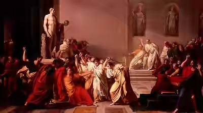
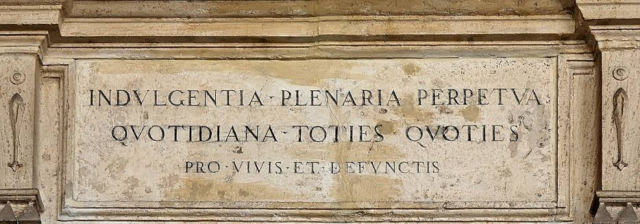

Experiment
I. Penemuan ayat Roma
"Jika seandainya ada neraka, berarti Roma telah dibangun di dalam neraka" by Marthin Luther
Luther telah mempunyai kesan bahwa dahulu Roma adalah kota yang tersuci di dunia, namun kini menjadi yang terburuk. Roma dibandingkannya dengan Yerusalem pada zaman nabi-nabi. Sementara itu, pergumulan rohaninya mencari Allah yang rahmani terus berjalan. pada tahun 1514 Luther menemukan jalan ke luar dari pergumulannya itu. Ia menemukan pengertian yang baru tentang perkataan-perkataan Paulus dalam Roma 1:16-17.

Tentang penemuannya itu Luther menulis, "Aku mulai sadar bahwa kebenaran Allah tidak lain daripada pemberian yang dianugerahkan Allah kepada manusia untuk memberi hidup kekal kepadanya; dan pemberian kebenaran itu harus disambut dengan iman. Injillah yang menyatakan kebenaran Allah itu, yakni kebenaran yang diterima oleh manusia, bukan kebenaran yang harus dikerjakannya sendiri. Dengan demikian, Tuhan yang penuh belas kasih itu membenarkan kita oleh anugerah dan iman saja. Aku seakan-akan diperanakkan kembali dan pintu firdaus terbuka bagiku. Pandanganku terhadap seluruh Alkitab berubah sama sekali karena mataku sudah celik sekarang."
II. Surat Indulgensia (penghapusan siksa)
pada masa pemerintahan Paus Leo X untuk pembangunan gedung Gereja Rasul Petrus di Roma dan pelunasan hutang Uskup Agung Albrecht dari Mainz. Dengan memiliki Surat Indulgensia, dengan cara membelinya, seseorang yang telah mengaku dosanya di hadapan imam tidak dituntut lagi untuk membuktikan penyesalannya dengan sungguh-sungguh.